The TikZ and PGF Packages
Manual for version 3.1.9a
TikZ
20 Matrices and Alignment
20.1 Overview¶
When creating pictures, one often faces the problem of correctly aligning parts of the picture. For example, you might wish that the baselines of certain nodes should be on the same line and some further nodes should be below these nodes with, say, their centers on a vertical lines. There are different ways of solving such problems. For example, by making clever use of anchors, nearly all such alignment problems can be solved. However, this often leads to complicated code. An often simpler way is to use matrices, the use of which is explained in the current section.
A TikZ matrix is similar to LaTeX’s {tabular} or {array} environment, only instead of text each cell contains a little picture or a node. The sizes of the cells are automatically adjusted such that they are large enough to contain all the cell contents.
Matrices are a powerful tool and they need to be handled with some care. For impatient readers who skip the rest of this section: you must end every row with \\. In particular, the last row must be ended with \\.
Many of the ideas implemented in TikZ’s matrix support are due to Mark Wibrow – many thanks to Mark at this point!
20.2 Matrices are Nodes¶
Matrices are special in many ways, but for most purposes matrices are treated like nodes. This means, that you use the node path command to create a matrix and you only use a special option, namely the matrix option, to signal that the node will contain a matrix. Instead of the usual TeX-box that makes up the text part of the node’s shape, the matrix is used. Thus, in particular, a matrix can have a shape, this shape can be drawn or filled, it can be used in a tree, and so on. Also, you can refer to the different anchors of a matrix.
/tikz/matrix=⟨true or false⟩ (default true) ¶
This option can be passed to a node path command. It signals that the node will contain a matrix.
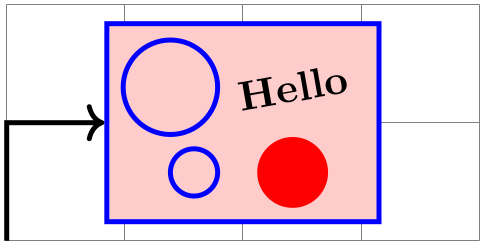
\begin{tikzpicture}
\draw[help lines] (0,0) grid
(4,2);
\node [matrix,fill=red!20,draw=blue,very thick] (my matrix) at
(2,1)
{
\draw (0,0) circle
(4mm); &
\node[rotate=10] {Hello}; \\
\draw (0.2,0) circle
(2mm); &
\fill[red] (0,0) circle
(3mm); \\
};
\draw [very thick,->] (0,0) |-
(my matrix.west);
\end{tikzpicture}
The exact syntax of the matrix is explained in the course of this section.
/tikz/every matrix(style, initially empty) ¶
This style is used in every matrix.
/tikz/every outer matrix(style, initially empty) ¶
While the every matrix key also applies to the matrix contents, this only applies to the outer node which holds the matrix.
Even more so than nodes, matrices will often be the only object on a path. Because of this, there is a special abbreviation for creating matrices:
\matrix ¶
Inside {tikzpicture} this is an abbreviation for \path node[matrix].
Even though matrices are nodes, some options do not have the same effect as for normal nodes:
-
1. Rotations and scaling have no effect on a matrix as a whole (however, you can still transform the contents of the cells normally). Before the matrix is typeset, the rotational and scaling part of the transformation matrix is reset.
-
2. For multi-part shapes you can only set the text part of the node.
-
3. All options starting with text such as text width have no effect.
-
4. If you place a matrix on a path, the matrix contents will be collected into a macro, which tokenizes them. This means that & will lose its meaning as an alignment character, resulting in an error. If you need to place a matrix on a path, use ampersand replacement to work around that problem.
20.3 Cell Pictures¶
A matrix consists of rows of cells. Each row (including the last one!) is ended by the command \\. The character & is used to separate cells. Inside each cell, you must place commands for drawing a picture, called the cell picture in the following. (However, cell pictures are not enclosed in a complete {pgfpicture} environment, they are a bit more light-weight. The main difference is that cell pictures cannot have layers.) It is not necessary to specify beforehand how many rows or columns there are going to be and if a row contains less cell pictures than another line, empty cells are automatically added as needed.
20.3.1 Alignment of Cell Pictures¶
For each cell picture a bounding box is computed. These bounding boxes and the origins of the cell pictures determine how the cells are aligned. Let us start with the rows: Consider the cell pictures on the first row. Each has a bounding box and somewhere inside this bounding box the origin of the cell picture can be found (the origin might even lie outside the bounding box, but let us ignore this problem for the moment). The cell pictures are then shifted around such that all origins lie on the same horizontal line. This may make it necessary to shift some cell pictures upwards and others downwards, but it can be done and this yields the vertical alignment of the cell pictures this row. The top of the row is then given by the top of the “highest” cell picture in the row, the bottom of the row is given by the bottom of the lowest cell picture. (To be more precise, the height of the row is the maximum \(y\)-value of any of the bounding boxes and the depth of the row is the negated minimum \(y\)-value of the bounding boxes).
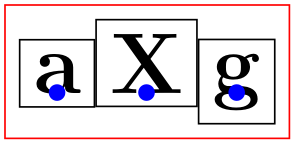
Each row is aligned in this fashion: For each row the cell pictures are vertically aligned such that the origins lie on the same line. Then the second row is placed below the first row such that the bottom of the first row touches the top of the second row (unless a row sep is used to add a bit of space). Then the bottom of the second row touches the top of the third row, and so on. Typically, each row will have an individual height and depth.
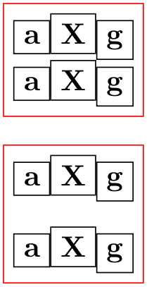
\begin{tikzpicture}
[every node/.style={draw=black,anchor=base}]
\matrix [draw=red]
{
\node {a}; &
\node {X}; &
\node {g}; \\
\node {a}; &
\node {X}; &
\node {g}; \\
};
\matrix [row sep=3mm,draw=red] at
(0,-2)
{
\node {a}; &
\node {X}; &
\node {g}; \\
\node {a}; &
\node {X}; &
\node {g}; \\
};
\end{tikzpicture}
Let us now have a look at the columns. The rules for how the pictures on any given column are aligned are very similar to the row alignment: Consider all cell pictures in the first column. Each is shifted horizontally such that the origins lie on the same vertical line. Then, the left end of the column is at the left end of the bounding box that protrudes furthest to the left. The right end of the column is at the right end of the bounding box that protrudes furthest to the right. This fixes the horizontal alignment of the cell pictures in the first column and the same happens the cell pictures in the other columns. Then, the right end of the first column touches the left end of the second column (unless column sep is used). The right end of the second column touches the left end of the third column, and so on. (Internally, two columns are actually used to achieve the desired horizontal alignment, but that is only an implementation detail.)
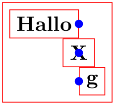
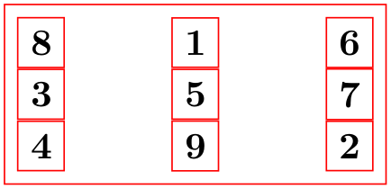
\begin{tikzpicture}[every node/.style={draw}]
\matrix [draw=red,column sep=1cm]
{
\node {8}; &
\node{1}; &
\node {6}; \\
\node {3}; &
\node{5}; &
\node {7}; \\
\node {4}; &
\node{9}; &
\node {2}; \\
};
\end{tikzpicture}
20.3.2 Setting and Adjusting Column and Row Spacing¶
There are different ways of setting and adjusting the spacing between columns and rows. First, you can use the options column sep and row sep to set a default spacing for all rows and all columns. Second, you can add options to the & character and the \\ command to adjust the spacing between two specific columns or rows. Additionally, you can specify whether the space between two columns or rows should be considered between the origins of cells in the column or row or between their borders.
/tikz/column sep=⟨spacing list⟩(no default) ¶
This option sets a default space that is added between every two columns. This space can be positive or negative and is zero by default. The ⟨spacing list⟩ normally contains a single dimension like 2pt.

\begin{tikzpicture}
\matrix [draw,column sep=1cm,nodes=draw]
{
\node(a) {123}; &
\node (b) {1}; &
\node {1}; \\
\node {12}; &
\node {12}; &
\node {1}; \\
\node(c) {1}; &
\node (d) {123}; &
\node {1}; \\
};
\draw [red,thick] (a.east) --
(a.east |- c)
(d.west) --
(d.west |- b);
\draw [<->,red,thick] (a.east) --
(d.west |- b)
node
[above,midway] {1cm};
\end{tikzpicture}
More generally, the ⟨spacing list⟩ may contain a whole list of numbers, separated by commas, and occurrences of the two key words between origins and between borders. The effect of specifying such a list is the following: First, all numbers occurring in the list are simply added to compute the final spacing. Second, concerning the two keywords, the last occurrence of one of the keywords is important. If the last occurrence is between borders or if neither occurs, then the space is inserted between the two columns normally. However, if the last occurs is between origins, then the following happens: The distance between the columns is adjusted such that the difference between the origins of all the cells in the first column (remember that they all lie on straight line) and the origins of all the cells in the second column is exactly the given distance.
The between origins option can only be used for columns mentioned in the first row, that is, you cannot specify this option for columns introduced only in later rows.
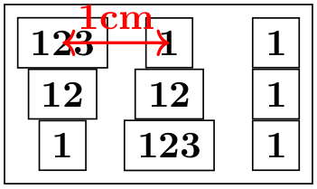
\begin{tikzpicture}
\matrix [draw,column sep={1cm,between origins},nodes=draw]
{
\node(a) {123}; &
\node (b) {1}; &
\node {1}; \\
\node {12}; &
\node {12}; &
\node {1}; \\
\node {1}; &
\node {123}; &
\node {1}; \\
};
\draw [<->,red,thick] (a.center) --
(b.center) node
[above,midway] {1cm};
\end{tikzpicture}
/tikz/row sep=⟨spacing list⟩(no default) ¶
This option works like column sep, only for rows. Here, too, you can specify whether the space is added between the lower end of the first row and the upper end of the second row, or whether the space is computed between the origins of the two rows.


\begin{tikzpicture}
\matrix [draw,row sep={1cm,between origins},nodes=draw]
{
\node (a) {123}; &
\node {1}; &
\node {1}; \\
\node (b) {12}; &
\node {12}; &
\node {1}; \\
\node {1}; &
\node {123}; &
\node {1}; \\
};
\draw [<->,red,thick] (a.center) --
(b.center) node
[right,midway] {1cm};
\end{tikzpicture}
The row-end command \\ allows you to provide an optional argument, which must be a dimension. This dimension will be added to the list in row sep. This means that, firstly, any numbers you list in this argument will be added as an extra row separation between the line being ended and the next line and, secondly, you can use the keywords between origins and between borders to locally overrule the standard setting for this line pair.
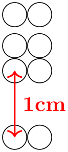
\begin{tikzpicture}
\matrix [row sep=1mm]
{
\draw (0,0) circle
(2mm); &
\draw (0,0) circle
(2mm); \\
\draw (0,0) circle
(2mm); &
\draw (0,0) circle
(2mm); \\[-1mm]
\draw (0,0) coordinate
(a) circle
(2mm); &
\draw (0,0) circle
(2mm); \\[1cm,between origins]
\draw (0,0) coordinate
(b) circle
(2mm); &
\draw (0,0) circle
(2mm); \\
};
\draw [<->,red,thick] (a.center) --
(b.center) node
[right,midway] {1cm};
\end{tikzpicture}
The cell separation character & also takes an optional argument, which must also be a spacing list. This spacing list is added to the column sep having a similar effect as the option for the \\ command for rows.
This optional spacing list can only be given the first time a new column is started (usually in the first row), subsequent usages of this option in later rows have no effect.
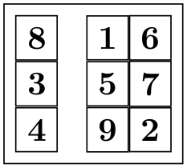
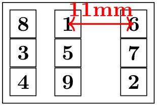
\begin{tikzpicture}
\matrix [draw,nodes=draw,column sep=1mm]
{
\node {8}; &[2mm] \node(a){1}; &[1cm,between origins] \node(b){6}; \\
\node {3}; &
\node {5}; &
\node {7}; \\
\node {4}; &
\node {9}; &
\node {2}; \\
};
\draw [<->,red,thick] (a.center) --
(b.center) node
[above,midway] {11mm};
\end{tikzpicture}
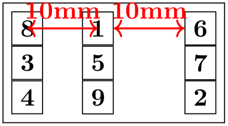
\begin{tikzpicture}
\matrix [draw,nodes=draw,column sep={1cm,between origins}]
{
\node (a) {8}; &
\node (b) {1}; &[between borders] \node (c) {6}; \\
\node {3}; &
\node {5}; &
\node {7}; \\
\node {4}; &
\node {9}; &
\node {2}; \\
};
\draw [<->,red,thick] (a.center) --
(b.center) node
[above,midway] {10mm};
\draw [<->,red,thick] (b.east) --
(c.west) node
[above,midway] {10mm};
\end{tikzpicture}
20.3.3 Cell Styles and Options¶
The following styles and options are useful for changing the appearance of all cell pictures:
/tikz/every cell={⟨row⟩}{⟨column⟩} (style, no default, initially empty) ¶
This style is installed at the beginning of each cell picture with the two parameters being the current ⟨row⟩ and ⟨column⟩ of the cell. Note that setting this style to draw will not cause all nodes to be drawn since the draw option has to be passed to each node individually.
Inside this style (and inside all cells), the current ⟨row⟩ and ⟨column⟩ number are also accessible via the counters \pgfmatrixcurrentrow and \pgfmatrixcurrentcolumn.
/tikz/cells=⟨options⟩(no default) ¶
This key adds the ⟨options⟩ to the style every cell. It is mainly just a shorthand for the code every cell/.append style=⟨options⟩.
/tikz/nodes=⟨options⟩(no default) ¶
This key adds the ⟨options⟩ to the style every node. It is mainly just a shorthand for the code every node/.append style=⟨options⟩.
The main use of this option is the install some options for the nodes inside the matrix that should not apply to the matrix itself.
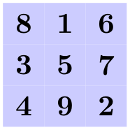
The next set of styles can be used to change the appearance of certain rows, columns, or cells. If more than one of these styles is defined, they are executed in the below order (the every cell style is executed before all of the below).
/tikz/column ⟨number⟩(style, no value) ¶
This style is used for every cell in column ⟨number⟩.
/tikz/every odd column(style, no value) ¶
This style is used for every cell in an odd column.
/tikz/every even column(style, no value) ¶
This style is used for every cell in an even column.
/tikz/row ⟨number⟩(style, no value) ¶
This style is used for every cell in row ⟨number⟩.
/tikz/every odd row(style, no value) ¶
This style is used for every cell in an odd row.
/tikz/every even row(style, no value) ¶
This style is used for every cell in an even row.
/tikz/row ⟨row number⟩ column ⟨column number⟩(style, no value) ¶
This style is used for the cell in row ⟨row number⟩ and column ⟨column number⟩.
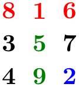
You can use the column ⟨number⟩ option to change the alignment for different columns.
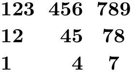
In some cases, it is desirable to include some automation in each column/row separately. A typical example is to apply stripe-pattern to almost all columns with exceptions. For these type of use-cases, nesting these keys can open up a lot of possibilities; in the following example a “feature comparison” table is demonstrated. It is intentionally made rather verbose and a bit redundant to show how the column and row settings can be progressively overwritten to create certain effects.
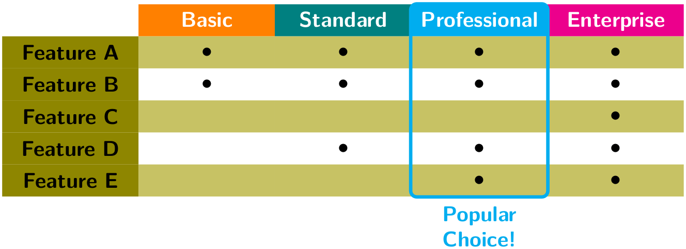
\usetikzlibrary {matrix,fit}
\begin{tikzpicture}[
font=\sffamily,
striped col/.style={column #1/.append style={
every even row/.style={nodes={fill=olive!50}}}},
head color/.style args={#1/#2}{column #1/.append style={
row 1/.append style={nodes={fill=#2}}}}
]
\matrix [
matrix of nodes, nodes in empty cells,
nodes={text
width=2cm, align=center,
minimum
height=1.5em, anchor=center},
striped col/.list={1,...,5}, % add striped col style to all cols
column 1/.style={ % Override stripes and modify the feature column
row 1 column 1/.style={nodes={fill=none, draw=none}},
nodes={fill=olive, inner ysep=0},
},
% modify headers first via common styles and then specific
colors
row 1/.style={nodes={text
depth=0.2ex, text
width=2cm, text=white}},
head color/.list={2/orange,3/teal,4/cyan,5/magenta}
] (m)
{
&
Basic
&
Standard
&
Professional
&
Enterprise
\\
Feature
A
&
$\bullet$
&
$\bullet$
&
$\bullet$
&
$\bullet$
\\
Feature
B
&
$\bullet$
&
$\bullet$
&
$\bullet$
&
$\bullet$
\\
Feature
C
&
&
&
&
$\bullet$
\\
Feature
D
&
&
$\bullet$
&
$\bullet$
&
$\bullet$
\\
Feature
E
&
&
&
$\bullet$
&
$\bullet$
\\
};
% Add emphasis on selection by the use of "fit" library
\node[fit={(m-1-4.north west) (m-6-4.south east)},
ultra thick, inner sep=0, rounded corners=1mm,
draw=cyan, label={[cyan,align=center]270:Popular\\Choice!}]{};
\end{tikzpicture}
The order in which these styles are applied is configurable. You can also install your own styles. The following styles (in fact, internally they are /.code keys) wrap the styles introduced in the previous paragraph passing the correct argument and ensuring that they are only called for even or odd rows. However, it is not recommended to override these.
/tikz/matrix/inner style/every cell(style, no value) ¶
Wraps /tikz/every cell.
/tikz/matrix/inner style/column(style, no value) ¶
Wraps /tikz/column ⟨number⟩.
/tikz/matrix/inner style/even odd column(style, no value) ¶
Wraps /tikz/every even column and /tikz/every odd column.
/tikz/matrix/inner style/row(style, no value) ¶
Wraps /tikz/row ⟨number⟩.
/tikz/matrix/inner style/even odd row(style, no value) ¶
Wraps /tikz/every even row and /tikz/every odd row.
/tikz/matrix/inner style/cell(style, no value) ¶
Wraps /tikz/row ⟨number⟩ column ⟨number⟩.
/tikz/matrix/inner style order(style, no value) ¶
The order in which these styles are applied to the matrix cells is specified by this key. By default it is
\tikzset{
matrix/inner style order={
every cell,
column,
even odd column,
row,
even odd row,
cell,
},
}
You can use this to install your own styles here, but only names of styles are permitted here. The style specification has to be placed outside of matrix/inner style order and unless it is installed inside /tikz/matrix/inner style/, it has to be fully qualified.
\tikzset{
my style/.code={%
\ifnum\pgfmatrixcurrentcolumn=2
\tikzset{font=\itshape}%
\fi
},
matrix/inner style order={
every cell,
even odd column,
even odd row,
column,
row,
cell,
/tikz/my style,
},
}
In many matrices all cell pictures have nearly the same code. For example, cells typically start with \node{ and end };. The following options allow you to execute such code in all cells:
/tikz/execute at begin cell=⟨code⟩(no default) ¶
The code will be executed at the beginning of each nonempty cell.
/tikz/execute at end cell=⟨code⟩(no default) ¶
The code will be executed at the end of each nonempty cell.
/tikz/execute at empty cell=⟨code⟩(no default) ¶
The code will be executed inside each empty cell.
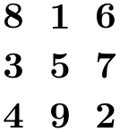
\begin{tikzpicture}
[matrix of nodes/.style={
execute at begin cell=\node\bgroup,
execute at end cell=\egroup;%
}]
\matrix [matrix of nodes]
{
8
&
1
&
6
\\
3
&
5
&
7
\\
4
&
9
&
2
\\
};
\end{tikzpicture}
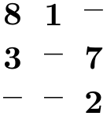
\begin{tikzpicture}
[matrix of nodes/.style={
execute at begin cell=\node\bgroup,
execute at end cell=\egroup;,%
execute at empty cell=\node{--};%
}]
\matrix [matrix of nodes]
{
8
&
1
&
\\
3
&
&
7
\\
&
&
2
\\
};
\end{tikzpicture}
The matrix library defines a number of styles that make use of the above options.
20.4 Anchoring a Matrix¶
Since matrices are nodes, they can be anchored in the usual fashion using the anchor option. However, there are two ways to influence this placement further. First, the following option is often useful:
/tikz/matrix anchor=⟨anchor⟩(no default) ¶
This option has the same effect as anchor, but the option applies only to the matrix itself, not to the cells inside. If you just say anchor=north as an option to the matrix node, all nodes inside matrix will also have this anchor, unless it is explicitly set differently for each node. By comparison, matrix anchor sets the anchor for the matrix, but for the nodes inside the value of anchor remain unchanged.
\begin{tikzpicture}
\matrix [matrix anchor=west] at
(0,0)
{
\node {123}; \\ % still center anchor
\node {12}; \\
\node {1}; \\
};
\matrix [anchor=west] at
(0,-2)
{
\node {123}; \\ % inherited west anchor
\node {12}; \\
\node {1}; \\
};
\end{tikzpicture}
The second way to anchor a matrix is to use an anchor of a node inside the matrix. For this, the anchor option has a special effect when given as an argument to a matrix:
/tikz/anchor=⟨anchor or node.anchor⟩(no default)
Normally, the argument of this option refers to anchor of the matrix node, which is the node that includes all of the stuff of the matrix. However, you can also provide an argument of the form ⟨node⟩.⟨anchor⟩ where ⟨node⟩ must be node defined inside the matrix and ⟨anchor⟩ is an anchor of this node. In this case, the whole matrix is shifted around in such a way that this particular anchor of this particular node lies at the at position of the matrix. The same is true for matrix anchor.
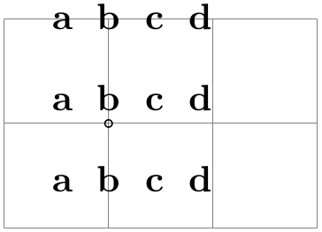
\begin{tikzpicture}
\draw[help lines] (0,0) grid
(3,2);
\matrix[matrix anchor=inner
node.south,anchor=base,row sep=3mm] at
(1,1)
{
\node {a}; &
\node {b}; &
\node {c}; &
\node {d}; \\
\node {a}; &
\node(inner node) {b}; &
\node {c}; &
\node {d}; \\
\node {a}; &
\node {b}; &
\node {c}; &
\node {d}; \\
};
\draw (inner node.south) circle
(1pt);
\end{tikzpicture}
20.5 Considerations Concerning Active Characters¶
Even though TikZ seems to use & to separate cells, pgf actually uses a different command to separate cells, namely the command \pgfmatrixnextcell and using a normal & character will normally fail. What happens is that, TikZ makes & an active character and then defines this character to be equal to \pgfmatrixnextcell. In most situations this will work nicely, but sometimes & cannot be made active; for instance because the matrix is used in an argument of some macro or the matrix contains nodes that contain normal {tabular} environments. In this case you can use the following option to avoid having to type \pgfmatrixnextcell each time:
/tikz/ampersand replacement=⟨macro name or empty⟩(no default) ¶
If a macro name is provided, this macro will be defined to be equal to \pgfmatrixnextcell inside matrices and & will not be made active. For instance, you could say ampersand replacement=\& and then use \& to separate columns as in the following example:
20.6 Examples¶
The following examples are adapted from code by Mark Wibrow. The first two redraw pictures from Timothy van Zandt’s PStricks documentation:
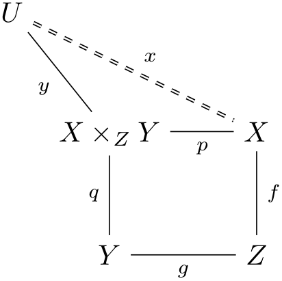
\usetikzlibrary {matrix}
\begin{tikzpicture}
\matrix [matrix of math nodes,row sep=1cm]
{
|(U)|
U
&[2mm] &[8mm] \\
&
|(XZY)|
X
\times_Z
Y
&
|(X)|
X
\\
&
|(Y)|
Y
&
|(Z)|
Z
\\
};
\begin{scope}[every node/.style={midway,auto,font=\scriptsize}]
\draw [double, dashed] (U) --
node
{$x$} (X);
\draw (X) --
node
{$p$} (X -| XZY.east)
(X) --
node
{$f$} (Z)
--
node
{$g$} (Y)
--
node
{$q$} (XZY)
--
node
{$y$} (U);
\end{scope}
\end{tikzpicture}
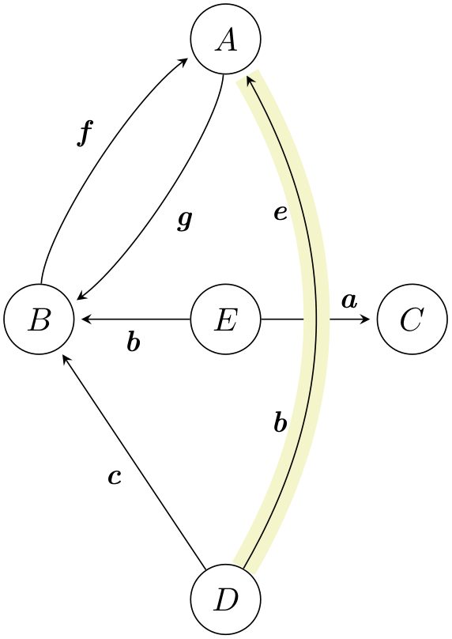
\usetikzlibrary {matrix}
\begin{tikzpicture}[>=stealth,->,shorten >=2pt,looseness=.5,auto]
\matrix [matrix of math nodes,
column sep={2cm,between origins},
row sep={3cm,between origins},
nodes={circle, draw, minimum size=7.5mm}]
{
&
|(A)|
A
&
\\
|(B)|
B
&
|(E)|
E
&
|(C)|
C
\\
&
|(D)|
D
\\
};
\begin{scope}[every node/.style={font=\small\itshape}]
\draw (A) to
[bend left] node
[midway] {g} (B);
\draw (B) to
[bend left] node
[midway] {f} (A);
\draw (D) --
node
[midway] {c} (B);
\draw (E) --
node
[midway] {b} (B);
\draw (E) --
node
[near end] {a} (C);
\draw [-,line width=8pt,draw=graphicbackground]
(D) to
[bend right, looseness=1] (A);
\draw (D) to
[bend right, looseness=1]
node
[near start] {b} node
[near end] {e} (A);
\end{scope}
\end{tikzpicture}
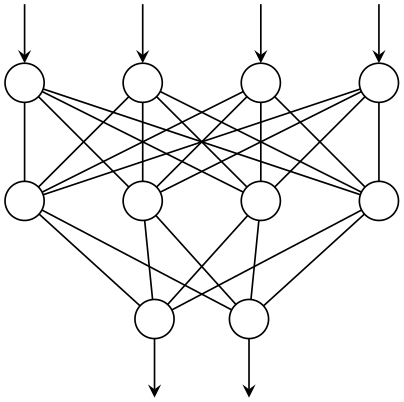
\usetikzlibrary {matrix}
\begin{tikzpicture}
\matrix (network)
[matrix of nodes,%
nodes in empty cells,
nodes={outer sep=0pt,circle,minimum size=4pt,draw},
column sep={1cm,between origins},
row sep={1cm,between origins}]
{
&
&
&
\\
&
&
&
\\
|[draw=none]|
&
|[xshift=1mm]|
&
|[xshift=-1mm]|
\\
};
\foreach \a in
{1,...,4}{
\draw (network-3-2) --
(network-2-\a);
\draw (network-3-3) --
(network-2-\a);
\draw [-stealth] ([yshift=5mm]network-1-\a.north) --
(network-1-\a);
\foreach \b in
{1,...,4}
\draw (network-1-\a) --
(network-2-\b);
}
\draw [stealth-] ([yshift=-5mm]network-3-2.south) --
(network-3-2);
\draw [stealth-] ([yshift=-5mm]network-3-3.south) --
(network-3-3);
\end{tikzpicture}
The following example is adapted from code written by Kjell Magne Fauske, which is based on the following paper: K. Bossley, M. Brown, and C. Harris, Neurofuzzy identification of an autonomous underwater vehicle, International Journal of Systems Science, 1999, 30, 901–913.
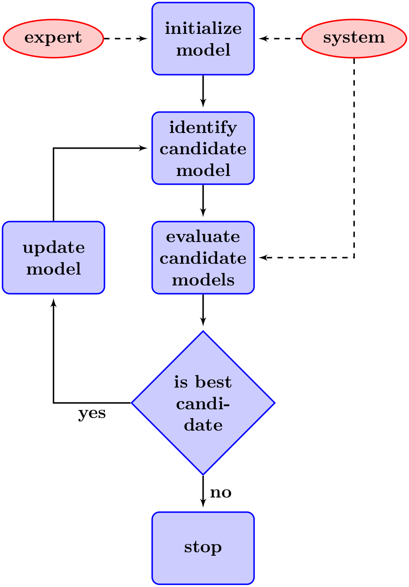
\usetikzlibrary {arrows,shapes.geometric}
\begin{tikzpicture}
[auto,
decision/.style={diamond, draw=blue, thick, fill=blue!20,
text width=4.5em,align=flush center,
inner sep=1pt},
block/.style ={rectangle, draw=blue, thick, fill=blue!20,
text width=5em,align=center, rounded corners,
minimum height=4em},
line/.style ={draw, thick, -latex',shorten >=2pt},
cloud/.style ={draw=red, thick, ellipse,fill=red!20,
minimum height=2em}]
\matrix [column sep=5mm,row sep=7mm]
{
% row 1
\node [cloud] (expert) {expert}; &
\node [block] (init) {initialize
model}; &
\node [cloud] (system) {system}; \\
% row 2
&
\node [block] (identify) {identify
candidate
model}; &
\\
% row 3
\node [block] (update) {update
model}; &
\node [block] (evaluate) {evaluate
candidate
models}; &
\\
% row 4
&
\node [decision] (decide) {is
best
candidate}; &
\\
% row 5
&
\node [block] (stop) {stop}; &
\\
};
\begin{scope}[every path/.style=line]
\path (init) --
(identify);
\path (identify) --
(evaluate);
\path (evaluate) --
(decide);
\path (update) |-
(identify);
\path (decide) -|
node
[near start] {yes} (update);
\path (decide) --
node
[midway] {no} (stop);
\path [dashed] (expert) --
(init);
\path [dashed] (system) --
(init);
\path [dashed] (system) |-
(evaluate);
\end{scope}
\end{tikzpicture}